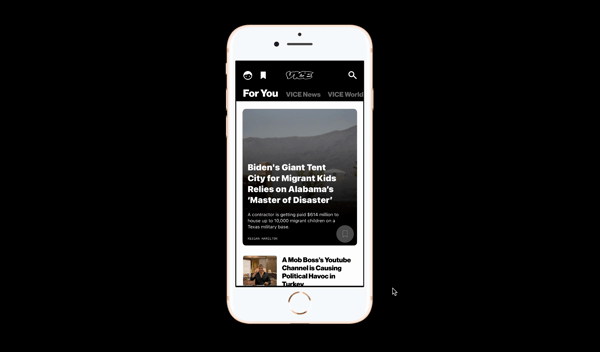
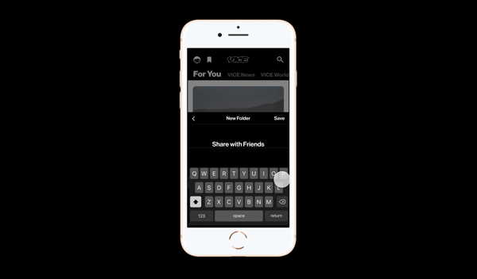
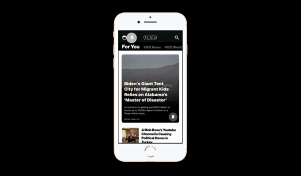
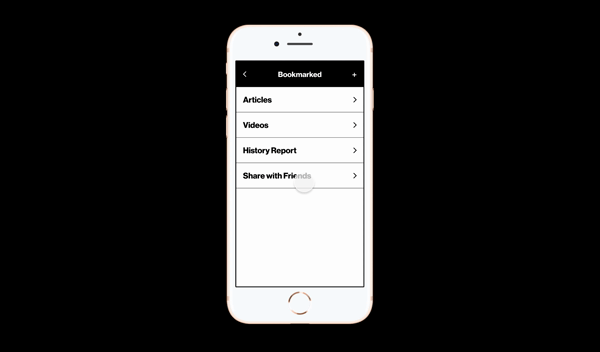

VICE Mobile App

About:
VICE Media strives to provide current events to a younger target audience, specifically the Millennial and Gen-Z generation. The mobile application gives easy access to read articles, watch videos, and share to friends.
Role:
UI Designer, UX Researcher, Copywriter
Tools:
Figma, Paper + Pen
Duration:
2 Weeks - June 2021
Planning out the Project
The project started with a simple analysis of the current VICE application, looking at the colours, layout, icons, and interactions. Then the research expanded to interviews with two intended users to understand their familiarity with VICE and their application, their current frustrations they have with the application, and features that they appreciate. This led to exploring two possible new features and finally, narrowing it down to one with a full mockup.
Interface Analysis
The analysis of the interface looked at four properies:
- Colour
- Icons
- Layout
- Interaction patterns
Colour
There are four main colours used in the VICE mobile application: black, white, green, and red.
#000000
Top navigation, headings, paragraphs
#FFFFFF
Background, headings, paragraphcs, icons
#7EC787
Confirmation message background
#FE0B0B
Logout paragraph colour
Icons
There are four icons that are being used in the VICE mobile application: profile icon, bookmark icon, search icon, and the share icon.
Layout
The VICE mobile application utilizes a single column grid and a three column grid.
Single Column
Used for the feed, the settings, the bookmarking section, and search function
Three Column
Used for the main feed for articles that are not the hero article
Interaction Patterns
The VICE app uses a horizontal scroll for all the pages. The horizontal scroll is used to move from one category to another. Swipe down is used to exit an article, which is a popup.


User Interviews
As VICE's target audience are people in the age generations of Gen-Zs and Millennials, two users from each generation group was interviewed.
Gen-Z, 22, University Student
This user is familiar with VICE and have read articles and watched videos produced by VICE. However, he does not use the application on a daily basis. His main frustration with the app was the fact the application doesn't give the user an easy way to organize bookmarks.
"How is the bookmark page organized? Even though the application shows me which articles that I have read, what if I need to organize the articles in a certain way? Is there a feature for that?"
Millennial, 26, Operations Specialist
This user too is familiar with VICE and have read articles and watched videos produced by VICE. However, he does not use the application on a daily basis. His main frustration with the app was the fact the application doesn't give the user an easy way to filter through subcategories within the main categories.
“I want a quick way to find articles that are about basketball because I don’t care for other sports, such as hockey and football.”
Deciding on a New Feature
The new feature I chose to design was a way to sort through bookmarks as there was no subcategory tags to implement a feature that would be able to filter through it. To keep the interaction patterns as smooth as possible, the new bookmark organization feature was chosen.
Bookmarking Folders
When the user taps onto the bookmark icon on an article, a bottom popup will appear, prompting the user to add the article into pre-existing folders. If an appropriate folder isn't present, the user is able to create a new folder.
Confirmation Notification
When the user bookmarks an article into a folder, a notification will pop at the top of the navigation to confirm. This is inline with VICE's interaction pattern as there is a green confirmation at the top nav when user's change their preferences in the settings.
Bookmarking Section
When tapping on the bookmark icon in the top nav, the user will be brought to the bookmark sections and can see an overview of the folders. They are able to add folders in this section as well.
Inside the Folder
Inside the folder, the user will be able to see the articles that they bookmarked. In the case they bookmarked a video, it'll be shown in the video section. This can be access by horizontally swiping between each section.
Demo Video
Reflection
Designing a new feature for an existing app with existing users is proven to be more difficult than creating a new app. Since the existing users are already famililar with the interface as well as the patterns, the feature needs to be seemlessly placed within the app so the users are able to pick up the feature instantly. Using the same design language as the existing interface is another important point. Through this assignment, I was able to understand that designing a feature that is not flashy but incorporates seemlessly is just as important as designing a ground-breaking feature.